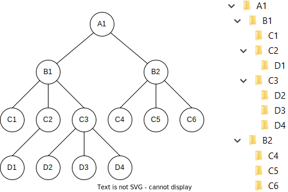

Licenca
To delo je na voljo pod pogoji slovenske licence Creative Commons 2.5:
priznanje avtorstva - nekomercialno - deljenje pod enakimi pogoji.
Celotna licenca je na voljo na spletu na naslovu http://creativecommons.org/licenses/by-nc-sa/2.5/si/. V skladu s to licenco je dovoljeno vsakemu uporabniku delo razmnoževati, distribuirati, javno priobčevati, dajati v najem in tudi predelovati, vendar samo v nekomercialne namene in ob pogoju, da navede avtorja oziroma avtorje in izdajatelja tega dela. Če uporabnik delo predela, kar pomeni, da ga spremeni, preoblikuje, prevede ali uporabi to delo v svojem delu, lahko predelavo dela ponudi na voljo le pod pogoji, ki so enaki pogojem iz te licence oziroma pod enako licenco.

Zgodovina razvoja podatkovnih baz
Pred izumom podatkovnih baz je bilo podatke mogoče shranjevati samo v datoteke, ki med seboj niso bile povezane. Programerji so morali vložiti precej dela in naporov, da so iz datotek izluščili podatke. Programi, ki so jih pisali, pa so morali izvajati zapleteno razčlenjevanje (ang. parsing) in povezovanje (ang. relating).
Programski jeziki kot na primer Perl, ki vsebujejo regularne izraze, idealne za obdelavo besedila, so programerjem precej poenostavili delo. Kljub temu je dostopanje do podatkov v datotekah še vedno precej zahtevno opravilo. Brez standardnega načina dostopa do podatkov je razvijanje programov počasnejše, obstaja večja verjetnost napak, programe pa je tudi težje vzdrževati.
Nepotrebno podvajanje podatkov (ang. data redundancy) in slaba celovitost podatkov (ang. data integrity) – podatki niso posodobljeni na vseh mestih, kar posledično pomeni, da so podatki zastareli ali napačni – sta pogosti posledici pri dostopanju do podatkov v datotekah. Zaradi teh dveh razlogov so programerji razvili sisteme za upravljanje podatkovnih baz (ang. database management systems – DBMS), ki zagotavljajo standarden in zanesljiv način dostopa do podatkov in posodabljanja podatkov.
Sistemi za upravljanje podatkovnih baz nudijo vmesno plast med programom in podatki. Programer se tako lahko posveti razvoju programa in se mu ni treba ukvarjati s težavami, povezanimi z dostopom do podatkov.
Podatkovni model (ang. database model) je logični model, katerega naloga je predstavitev podatkov. Namesto, da bi se načrtovalci podatkovnih baz ukvarjali s tem, kako so podatki fizično shranjeni, jim podatkovni model omogoča, da na podatke gledajo iz druge, višje perspektive. To zmanjšuje prepad med problemi iz resničnega življenja, za katere razvijajo programske rešitve, in med tehnično izvedbo.
Obstaja več podatkovnih modelov. V nadaljevanju si bomo najprej ogledali hierarhični in mrežni model. Nato si bomo ogledali še relacijski model, ki ga uporablja večina sodobnih sistemov za upravljanje podatkovnih baz.
Hierarhični podatkovni model
Najzgodnejši model je bil hierarhični podatkovni model (ang. Hierarchical database model), ki spominja na narobe obrnjeno drevo. Zapisi so med seboj povezani s povezavami starš-otrok (ang. parent-child), pri čemer je vsak starš lahko povezan z več otroki, vsak otrok pa pripada le enemu staršu. Tako strukturo gotovo že poznate, saj tako deluje večina datotečnih sistemov.
Spomnite se na drevesno strukturo map, podmap in datotek. Vsaka mapa lahko vsebuje več podmap in/ali datotek – ima več otrok. Vsaka datoteka ali mapa pa lahko obstaja le v eni mapi – ima le enega starša.
Spodnja slika prikazuje, da je A1 korenska mapa (ang. root folder), njena otroka pa sta B1 in B2. B1 je starš C1, C2 in C3, ki lahko imajo tudi lastne otroke.
